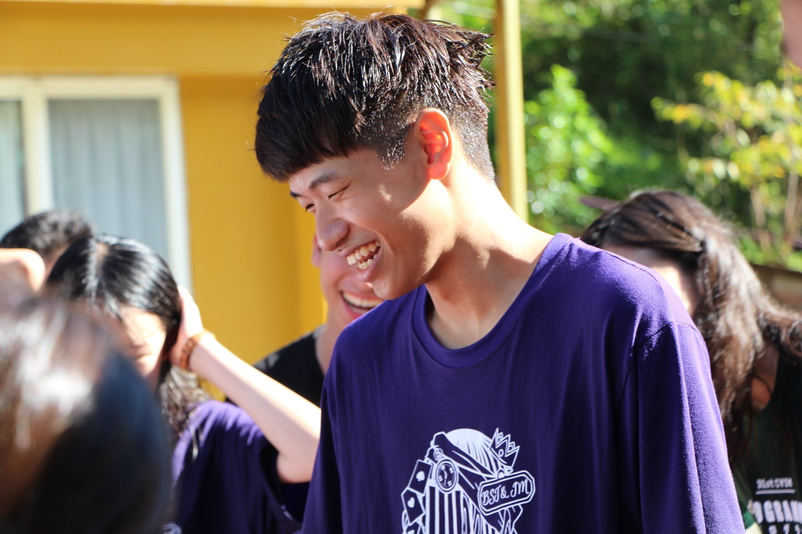

Justin Tong
程式技能
C#
69%
Java
80%
HTML CSS JS
60%
JSP
82%
Photoshop
60%
專案課程

與黑孩子樹屋合作，義賣黑孩子咖啡，第一次要真正的賣一項商品，不只要考慮成本，也要考慮消費者喜好，是一次印象深刻的體驗
大二上學期末與甲班合作項目，第一次製作真正的購物網站，操作資料庫並整合，前端做得很好，讓我們後端事半功倍，也讓我對後端有濃厚的興趣
大二下學期期中專案，我們要推銷中原的一個項目，我們小組選擇了圖書館，通過這次的專案， 我們更了解圖書館的許多優點
社團經驗
高中書法社
高中擔任書法社社長，雖然是陰錯陽差進入的，但在裡面學到了很多事情，也學會如何帶一隻社團，寫著寫著對書法漸漸有了興趣
大學系學會
大學在資管系學會當任會長，學到如何帶規模更大的團體，許許多多的活動都要我們來規劃 ，要學習如何與幹部相處 ，是一個不一樣的體驗
聯絡方式
生日:1999/09/14
電話:0972887587
信箱:s10744229@std.cycu.tw
工作經驗
爭鮮迴轉壽司
在剛升大二時，曾經在爭鮮打工過一段時間，這段時間我學到很多東西，學習到服務業對待客人的精神，也學會作任何事都要兢兢業業
小三美日
在大二期間，我通過朋友介紹到小三美日打工，在小三美日，我學到怎麼跟客人對話，怎麼推銷產品，在打工中我更知道如何說服客人了